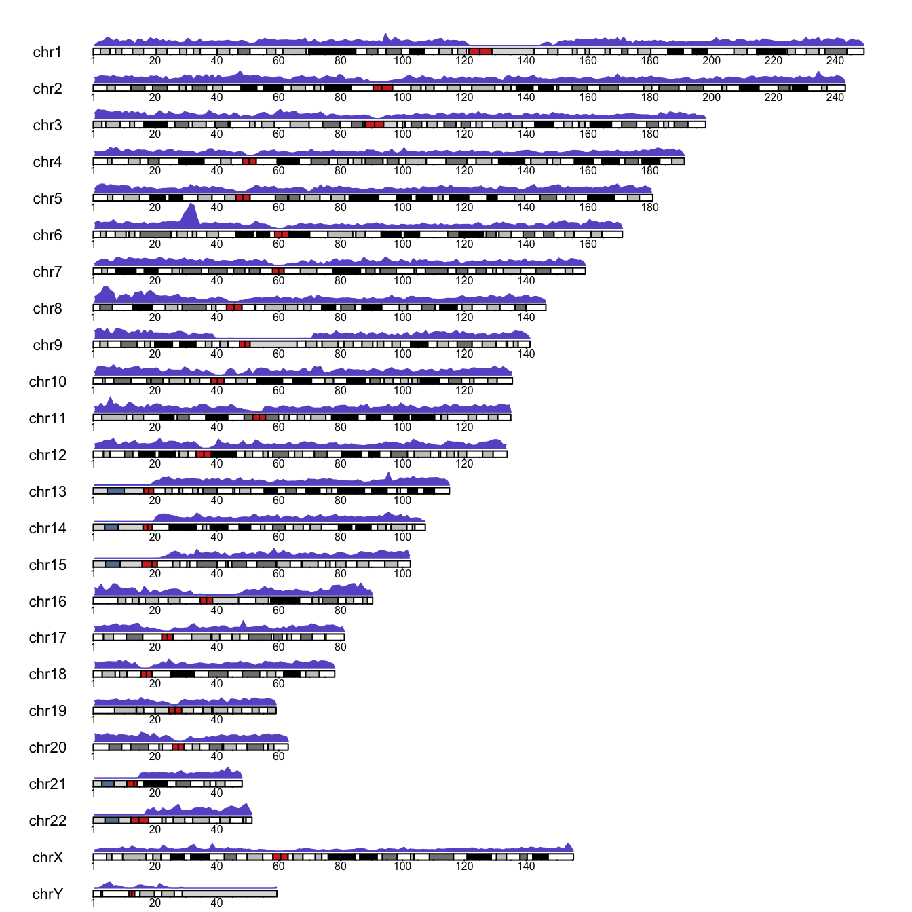
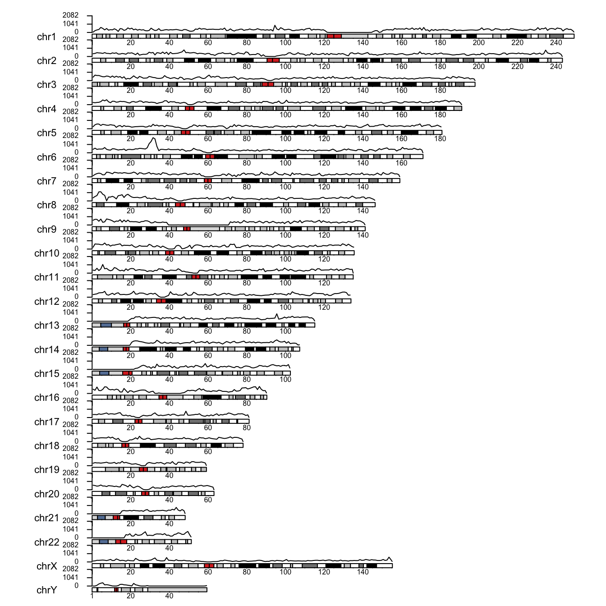
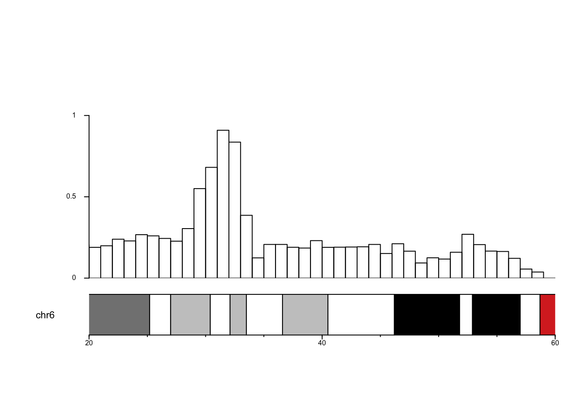

# install once:
# if (!requireNamespace("BiocManager")) install.packages("BiocManager")
# BiocManager::install(c("karyoploteR", "biomaRt"))
library(karyoploteR)Plotting 23andMe marker density with karyoploteR
R
genetics
visualisation
How to draw the density of genotyped SNPs along a karyogram, and then zoom in on a region of interest.
NoteUpdated in 2026
This is a lightly edited version of a 2018 post. The prose and figures are the originals. The code is updated for current Bioconductor, but it is shown, not re-run: the SNPedia files the post relied on are no longer downloadable, so the figures below are the ones produced in 2018.
Background
23andMe is a personal genomics company that offers saliva-based, direct-to-consumer genetic testing. It is probably one of the most popular ways for people to learn more about their own genetic makeup, including ancestry.
For genotyping, the company uses a SNP array (SNP-chip). In short, such a chip lets us “read” polymorphic sites in human DNA: sites known to vary between individuals. Different versions of these sites are associated with traits such as eye colour, blood group or the risk of developing a disease. A given version does not always cause the phenotype. Often a SNP is a good proxy: it tags the phenotype. This works because DNA is inherited in rather long chunks (haplotypes), so a variant tends to travel together with its neighbours, including the actual causative variant. Thanks to this, genotyping a limited number of SNPs can tell you a lot about many traits.
23andMe has used three versions of its chip, introduced in 2008, 2012 and 2014. I was curious how they differ, so I wanted to visualise the density of genotyped SNPs per fixed-length window along the genome.
The data
23andMe uses the Mendel family as its showcase. We look at the data for one family member, Lily Mendel (a real person: Linda Avey, a co-founder of the company). Data from all three chips were available at SNPedia (2008 v1, 2012 v3 and 2014 v4). The format is simple: one row per marker, with four columns:
rsid– unique rs identifier of the marker,chr– chromosome,pos– coordinate of the marker,gtype– the genotype, e.g. GG.
Analysis
Preparations
Loading the data
We load the data, fix the column names and convert it into a GRanges object, which is what the density plot needs.
gdata <- read.table(file = "genome_Lilly_Mendel_v4.txt", comment.char = "#")
names(gdata) <- c("rsid", "chr", "pos", "gtype")
regions <- GRanges(seqnames = paste0("chr", gdata$chr),
ranges = IRanges(start = gdata$pos, width = 2))Plotting marker density
A karyogram is an ideogram of ordered chromosomes: a map of the genome. We plot marker density over each chromosome with kpPlotDensity(). A nice feature of karyoploteR is that it also draws the G-bands, the pattern produced by Giemsa staining, which cytogeneticists use to visualise chromosome structure. The one important parameter here is the window size, which I set empirically to 1 Mbp.
kp <- plotKaryotype(cex = .7) |>
kpAddBaseNumbers(cex = .5) |>
kpPlotDensity(data = regions,
window.size = 1e6,
col = "slateblue",
border = "slateblue")
So what?
I think the visualisation is neat, although the y-axis is missing (we fix that next). We can see low marker density around centromeres (the central, red-stained parts of the chromosomes) and a long stretch with no markers on the Y chromosome, probably its non-pseudoautosomal region. The density is also very low at the start of chromosomes 13, 14, 15, 21 and 22, and exceptionally high on the short arm of chromosome 6. I had no idea why, and not much time to research it…
Plotting the actual counts
What if we want the counts per window rather than the density? Easy enough:
counts <- kp$latest.plot$computed.values$density
data_counts <- GRanges(kp$latest.plot$computed.values$windows, y = counts)
max_count <- floor(max(counts) + .1 * max(counts))
# Plotting parameters established by trial and error
pp <- getDefaultPlotParams(plot.type = 1)
pp$leftmargin <- 0.15 # keep chromosome names clear of the plot
pp$topmargin <- 150 # avoid overlap between chromosomes
pp$bottommargin <- 150
kp <- plotKaryotype(cex = .7, plot.params = pp) |>
kpAddBaseNumbers(cex = .5) |>
kpLines(data = data_counts, ymin = 0, ymax = max_count) |>
kpAxis(cex = .5, ymin = 0, ymax = max_count)
I did not manage to avoid all overlap between chromosomes and their data panels. It can probably be refined by playing with the graphical parameters, but you get the idea.
Zooming in
We spotted a region of high marker density on the short arm of chromosome 6. Let’s take a closer look.
pp <- getDefaultPlotParams(plot.type = 1)
pp$leftmargin <- 0.15
pp$topmargin <- 120
to_zoom <- GRanges("chr6", IRanges(start = 20e6, end = 60e6))
kp <- plotKaryotype(cex = .7, plot.params = pp, zoom = to_zoom) |>
kpAddBaseNumbers(cex = .5) |>
kpAxis(cex = .5, ymin = 0) |>
kpBars(data = data_counts, y1 = data_counts$y, ymax = max_count)
Almost perfect; only the y-axis has vanished in a mysterious way (my fault or a feature of the package, I never found out). The highest counts occur roughly between 30 and 35 Mbp. It would be interesting to see which genes sit there.
WarningWhat a real study would need
- Check the exact coordinates of the dense region rather than eyeballing 30-35 Mbp.
- 23andMe uses hg19 coordinates, while current Ensembl uses hg38. The code below asks Ensembl for GRCh37 (= hg19) so the two agree. Otherwise you would lift the coordinates over, for instance with
liftOver. I did that back then, and the regions were close enough not to matter for this post.
To find the attributes and filters available in BioMart, see the BioMart web interface; once you have set them, click XML.
library(biomaRt)
ensembl <- useEnsembl(biomart = "genes",
dataset = "hsapiens_gene_ensembl",
GRCh = 37)
genes <- getBM(attributes = c("ensembl_gene_id", "external_gene_name", "description"),
filters = c("chromosome_name", "start", "end"),
values = list("6", 30000000, 35000000),
mart = ensembl)
knitr::kable(genes)Conclusion
Now we know what sits in the region. Any guesses why 23andMe put so many markers there?